Berikut kegiatan dan program pemberdayaan perempuan serta PAUD binaan PERWANAS kepada masyarakat.
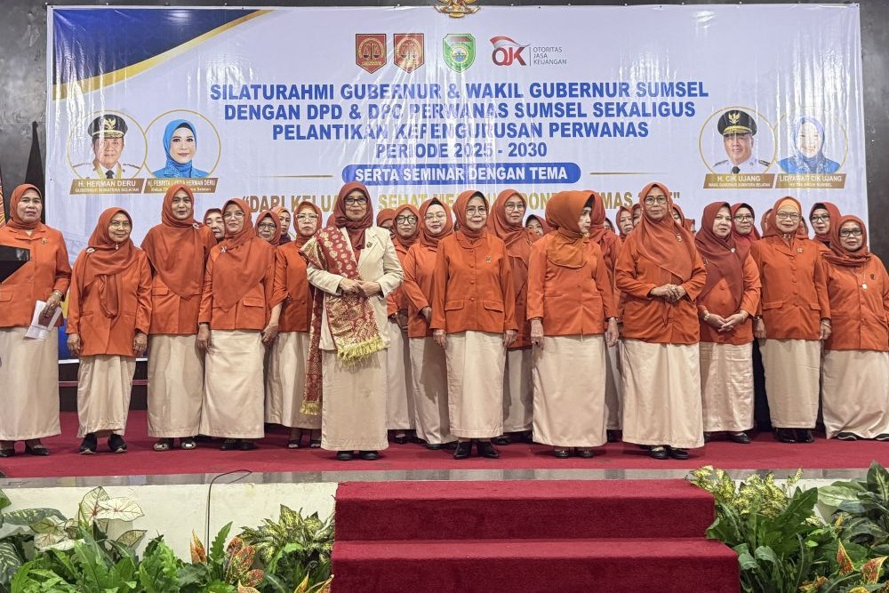
Pelantikan Pengurus DPD dan Sosialisasi OJK, Palembang, 5 Mei 2026.
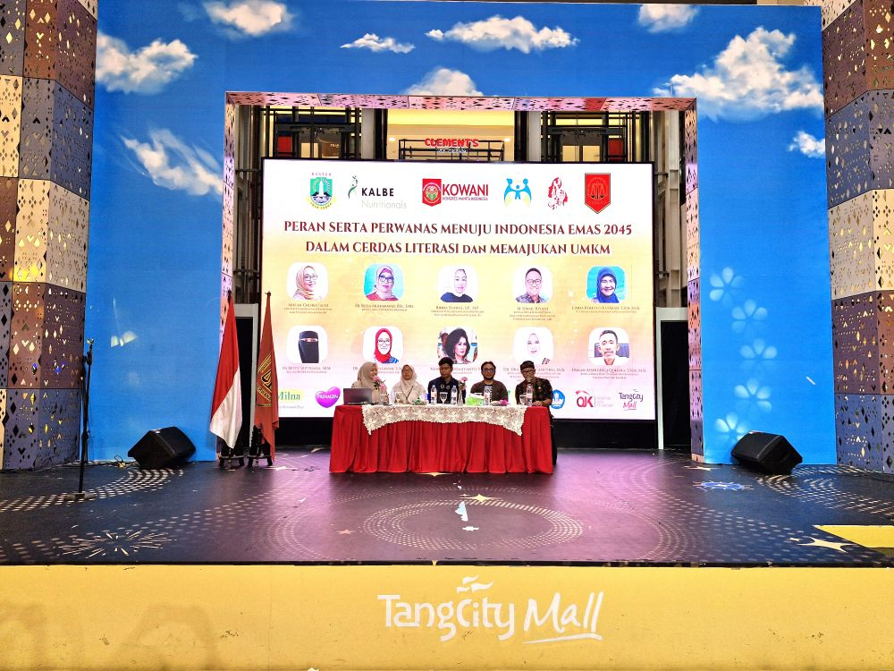
Peran serta PERWANAS menuju Indonesia Emas 2045, Atrium Tangcity Mall, 28 November 2025.
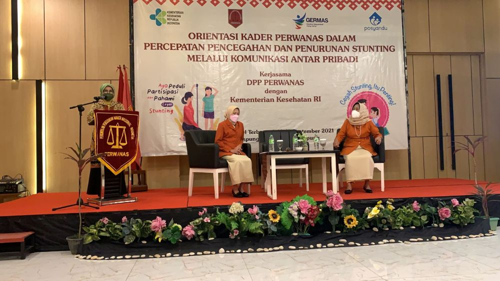
Kerjasama PERWANAS dengan Dirpromkes RI, Lampung, 10 September 2021.

Peresmian Kantor DPP PERWANAS yang baru, Jakarta, 16 Februari 2019.
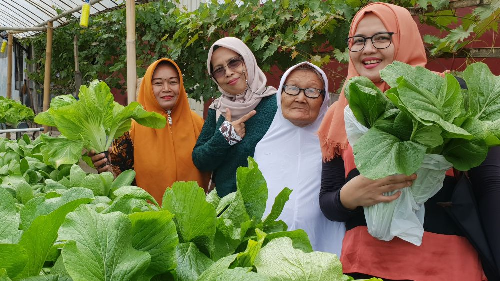
Kunjungan DPP PERWANAS ke Unit Usaha Binaan PERWANAS, Kebun Hidroponik Kartini - Brebes, 26 Desember 2018.
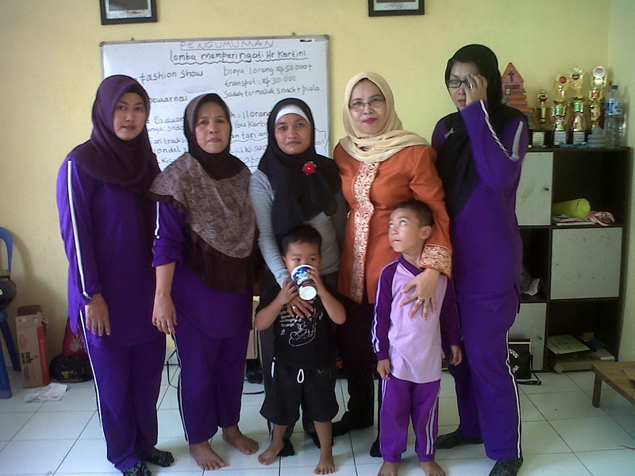
Kunjungan ke PAUD Melati, Kedaung Kali Angke, Jakarta Barat, 2 April 2015.
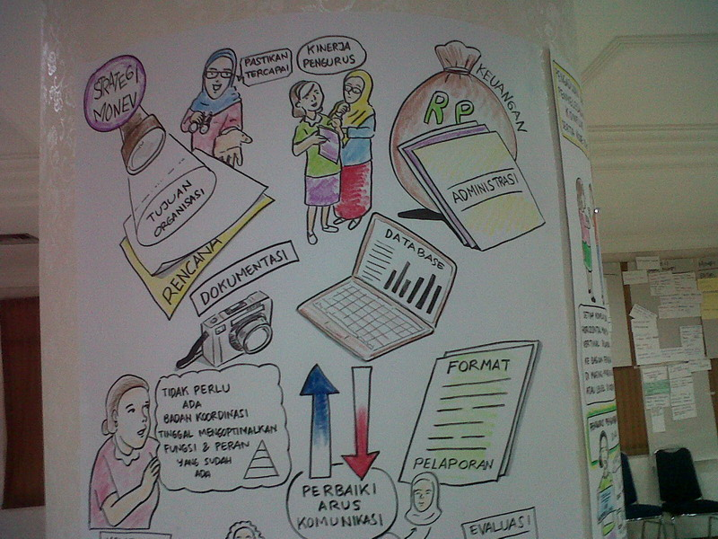
Workshop peningkatan kompetensi pengajar PAUD binaan PERWANAS, Jakarta, 3 Februari 2015.
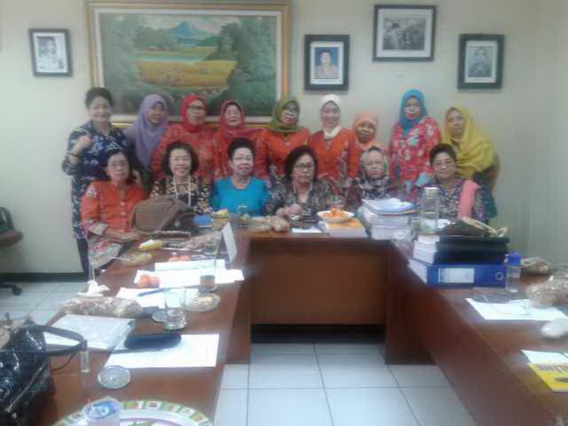
Pertemuan dan diskusi pengelola PAUD binaan PERWANAS, Jakarta, 29 Januari 2015.

Wisuda angkatan 2014 PAUD Menur, Kebon Jeruk, Jakarta Barat, 5 Mei 2014.
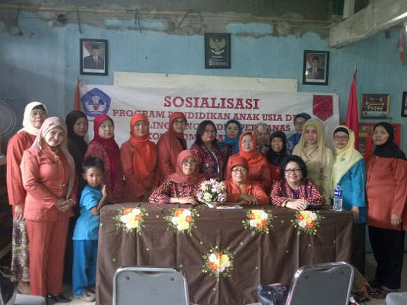
Sosialisasi Pelayanan PAUD di Jakarta, 17 Januari 2014.
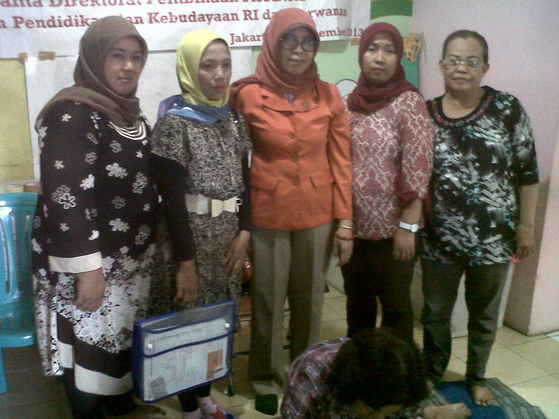
Sosialisasi Program PAUD kepada PAUD Ovrinet, Tangerang, Banten, 17 Januari 2014.
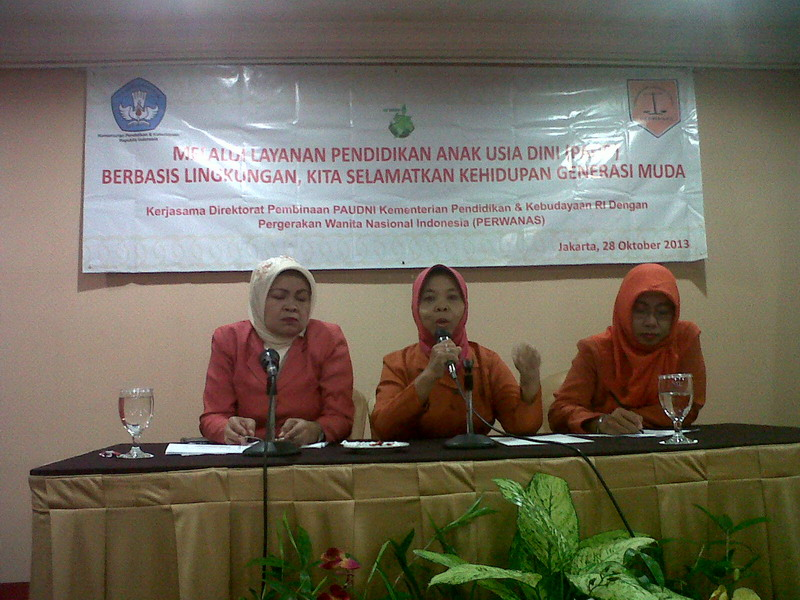
Penilaian Bunda PAUD bersama Direktorat Pembinaan PAUDNI Kemendikbud RI, Kalimantan Selatan, 28 Oktober 2013.
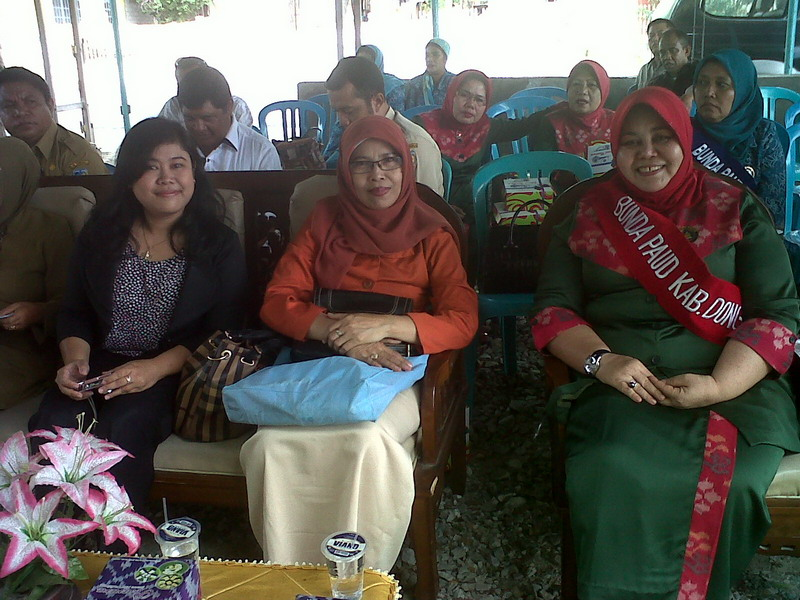
Kunjungan ke PAUD Donggala, Desa Loli Tasiburi, Sulawesi Tenggara, 23 Oktober 2013.
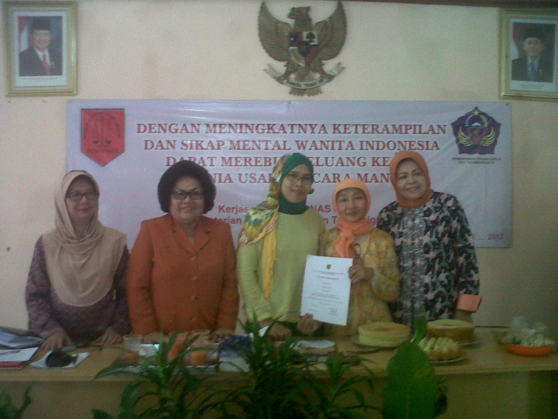
Pelatihan keterampilan tata boga bersama Kementerian Tenaga Kerja dan Transmigrasi RI, Jakarta, 5 Januari 2013.

Ketua DPR RI Bapak Dr. H. Marzuki Alie bersilaturahmi dengan PAUD Rosalinda binaan PERWANAS di Meruya Utara, Jakarta Barat, 13 Mei 2012.